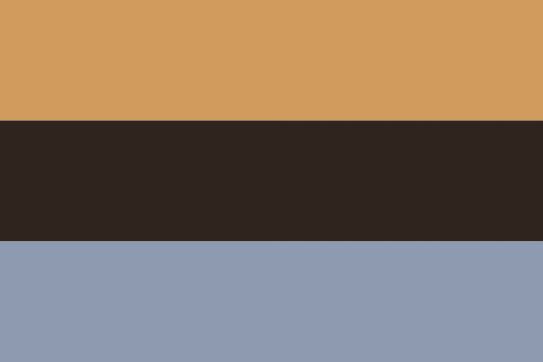

History
The homeland of the Azovic language is permanently anchored to the unique shores of its namesake body of water, the Sea of Azov—historically known as the Maeotian Marshes. As the shallowest sea on Earth, reaching a maximum depth of mere meters, this enclosed northern extension of the Black Sea possesses an exceptionally low salinity due to the massive freshwater influx from the Don and Kuban river systems. This brackish environment creates a highly unstable, milk-green maritime ecosystem bounded by low-lying lagoons, fine sandy spits, and wide, marshy estuaries that frozen over completely during the brutal winter months, separating the region from open Mediterranean trade routes and fostering unique communal isolation.
The flag of Azovia is unique and recognizable, with its top butternut tree color symbolizing the fur of horses that were and still are central to the culture of the Azovians and their ancestors. The ever so slightly greenish black in the middle symbolizes the nation's strength and resilience, which is reflected in the language, as it has retained almost all features of Proto-Indo-European, its ancestor. Finally, the faded blue at the bottom represents the Azov Sea, the namesake of the country, people, and language.
